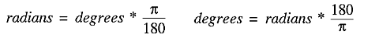

4. Game object classes¶
Once you've loaded your modules, and written your resource handling functions, you'll want to get on to writing some game objects. The way this is done is fairly simple, though it can seem complex at first. You write a class for each type of object in the game, and then create an instance of those classes for the objects. You can then use those classes' methods to manipulate the objects, giving objects some motion and interactive capabilities. So your game, in pseudo-code, will look like this:
#!/usr/bin/python
# [load modules here]
# [resource handling functions here]
class Ball:
# [ball functions (methods) here]
# [e.g. a function to calculate new position]
# [and a function to check if it hits the side]
def main:
# [initiate game environment here]
# [create new object as instance of ball class]
ball = Ball()
while True:
# [check for user input]
# [call ball's update function]
ball.update()
This is, of course, a very simple example, and you'd need to put in all the code, instead of those little bracketed comments. But
you should get the basic idea. You create a class, into which you put all the functions for a ball, including __init__,
which would create all the ball's attributes, and update, which would move the ball to its new position, before blitting
it onto the screen in this position.
You can then create more classes for all of your other game objects, and then create instances of them so that you can handle them
easily in the main function and the main program loop. Contrast this with initiating the ball in the main
function, and then having lots of classless functions to manipulate a set ball object, and you'll hopefully see why using classes is
an advantage: It allows you to put all of the code for each object in one place; it makes using objects easier; it makes adding new
objects, and manipulating them, more flexible. Rather than adding more code for each new ball object, you could simply create new
instances of the Ball class for each new ball object. Magic!
4.1. A simple ball class¶
Here is a simple class with the functions necessary for creating a ball object that will, if the update function is called
in the main loop, move across the screen:
class Ball(pygame.sprite.Sprite):
"""A ball that will move across the screen
Returns: ball object
Functions: update, calcnewpos
Attributes: area, vector"""
def __init__(self, vector):
pygame.sprite.Sprite.__init__(self)
self.image, self.rect = load_png('ball.png')
screen = pygame.display.get_surface()
self.area = screen.get_rect()
self.vector = vector
def update(self):
newpos = self.calcnewpos(self.rect,self.vector)
self.rect = newpos
def calcnewpos(self,rect,vector):
(angle,z) = vector
(dx,dy) = (z*math.cos(angle),z*math.sin(angle))
return rect.move(dx,dy)
Here we have the Ball class, with an __init__ function that sets the ball up, an update
function that changes the ball's rectangle to be in the new position, and a calcnewpos function to calculate the ball's
new position based on its current position, and the vector by which it is moving. I'll explain the physics in a moment. The one other
thing to note is the documentation string, which is a little bit longer this time, and explains the basics of the class. These strings
are handy not only to yourself and other programmers looking at the code, but also for tools to parse your code and document it. They
won't make much of a difference in small programs, but with large ones they're invaluable, so it's a good habit to get into.
4.1.1. Diversion 1: Sprites¶
The other reason for creating a class for each object is sprites. Each image you render in your game will be a sprite object, and so
to begin with, the class for each object should inherit the Sprite class.
This is a really nice feature of Python - class
inheritance. Now the Ball class has all of the functions that come with the Sprite class, and any object
instances of the Ball class will be registered by Pygame as sprites. Whereas with text and the background, which don't
move, it's OK to blit the object onto the background, Pygame handles sprite objects in a different manner, which you'll see when we
look at the whole program's code.
Basically, you create both a ball object, and a sprite object for that ball, and you then call the ball's update function on the
sprite object, thus updating the sprite. Sprites also give you sophisticated ways of determining if two objects have collided.
Normally you might just check in the main loop to see if their rectangles overlap, but that would involve a lot of code, which would
be a waste because the Sprite class provides two functions (spritecollide and groupcollide)
to do this for you.
4.1.2. Diversion 2: Vector physics¶
Other than the structure of the Ball class, the notable thing about this code is the vector physics, used to calculate
the ball's movement. With any game involving angular movement, you won't get very far unless you're comfortable with trigonometry, so
I'll just introduce the basics you need to know to make sense of the calcnewpos function.
To begin with, you'll notice that the ball has an attribute vector, which is made up of angle and z.
The angle is measured in radians, and will give you the direction in which the ball is moving. Z is the speed at which the ball
moves. So by using this vector, we can determine the direction and speed of the ball, and therefore how much it will move on the x and
y axes:
The diagram above illustrates the basic maths behind vectors. In the left hand diagram, you can see the ball's projected movement represented by the blue line. The length of that line (z) represents its speed, and the angle is the direction in which it will move. The angle for the ball's movement will always be taken from the x axis on the right, and it is measured clockwise from that line, as shown in the diagram.
From the angle and speed of the ball, we can then work out how much it has moved along the x and y axes. We need to do this because Pygame doesn't support vectors itself, and we can only move the ball by moving its rectangle along the two axes. So we need to resolve the angle and speed into its movement on the x axis (dx) and on the y axis (dy). This is a simple matter of trigonometry, and can be done with the formulae shown in the diagram.
If you've studied elementary trigonometry before, none of this should be news to you. But just in case you're forgetful, here are some useful formulae to remember, that will help you visualise the angles (I find it easier to visualise angles in degrees than in radians!)
Edit on GitHub